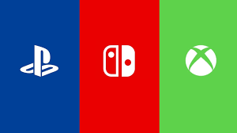

Playswitchbox is a company all about gaming consoles. The name is a combination of the 3 most popular consoles out currently. Playstation 5, Nintendo Switch, and the 2 variations of Xbox. Our company's purpose is to make consumers/ experience with these game systems better. As a frequent user of all 3 of these systems, we are aware that these companies (mainly Sony and Nintendo) are lacking in console reliablity. Not only are the console designs faulty, but the companies themselves offer little to no help to fix their own mistakes. That's where Playswitchbox comes in.
On the left is Isaac and on the right is Joel. We are the Zellem brothers. As advid gamers, we both want to see a better world for gamers no matter what game system they use. In our own(and friends) experience, we are aware of the issues that present themselves in the console world. Unfortunately, game consoles are not "do it yourself" friendly like the gaming PC. Or at least not with the proper training or equipment. Joined by a team of software engineers we aim to repair and fix the issues console owners face today at an affordable price! We also offer console customization and redesign to modify the look of your console on the outside but improve console storage, loading speed, and gaming performance on the inside.